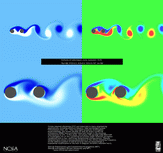
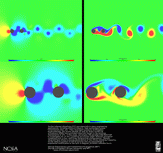
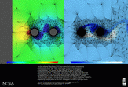
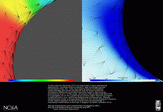
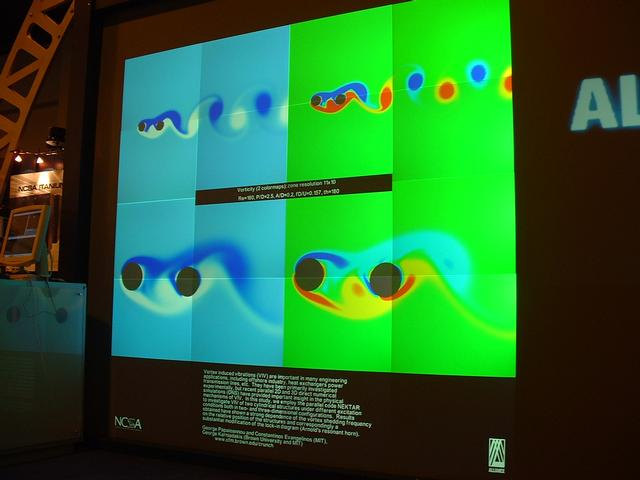
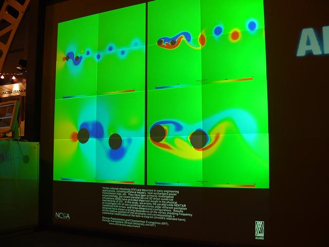
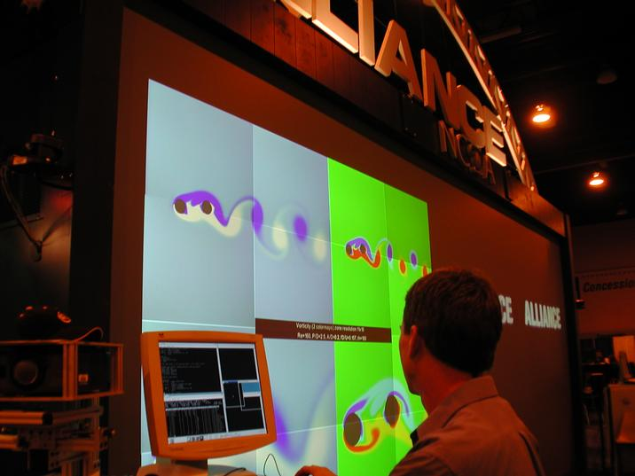
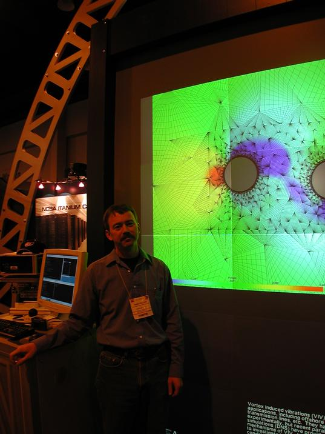

Vortex induced vibrations
Vortex induced vibrations (VIV) are important in many
engineering applications, including offshore industry,
heat exchangers, power transmission lines, etc. They
have been primarily investigated experimentally, but
recent parallel 2D and 3D direct numerical simulations (DNS)
have provided important insight in the physical mechanisms
of VIV. In this study, we employ the parallel code NEKTAR
to investigate VIV of two cylindrical structures under
different excitation conditions both in two- and three-dimensional
configurations. The runs have been performed on the NCSA Linux
clusters (POSIC and PLATINUM) with the majority of runs involving
16 to 24 processors at about 1 second per time step.
Results obtained have shown a strong dependence of the vortex shedding
frequency on the relative position of the structures and correspondingly
a substantial modification of the lock-in diagram (Arnold's resonant horn).
George Papaioannou (MIT), Constantinos Evangelinos (MIT), and
George Karniadakis (Brown University and MIT)
CRUNCH web page
Some final results
 Vorticity
 Pressure-Vorticity
 --->
 Pressure-Vorticity (+ mesh) zoom-in
(click on image for larger version)
Supercomputing 2001
Snapshots of movies that were shown on the tiled wall at Supercomputing 2001:




(click on image for larger version)
Randy Heiland
{kind=link}
{kind=link}
{kind=link}
{kind=link}
{kind=link}
{kind=link}
{kind=link}
{kind=link}